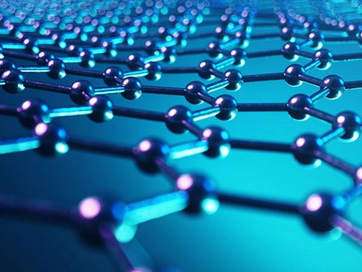

So this page will be very similiar to the smart materials, it will have the same navigation on the top, just it will be for modern materials.
So you might be asking, what are modern materials? and what is the difference between smart materials and any other materials compared to modern materials, well i'm here to tell you that.
The difference between modern materials and smart materials is the fact that modern materials are static, they are permanent, while smart materials as i've explained before are dynamic, and they're rather adaptive, they are not permanent at all.
Traditional materials are raw, they're natural and they're rarely processed, they're usually just materials like wood, stone clay etc. While Modern materials are synthetic, they're extremely engineered in modern labs and then are forced to basically be pushed out of their natural limits.
